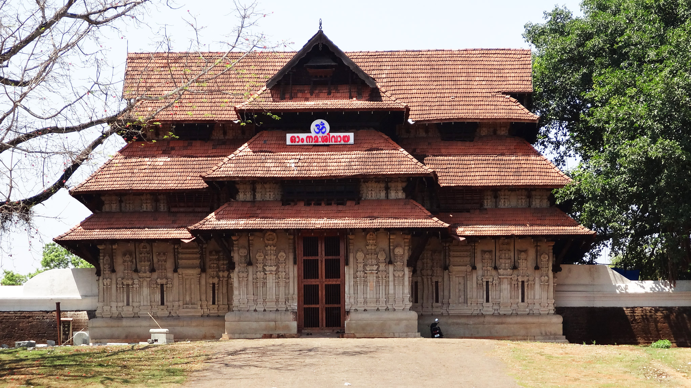
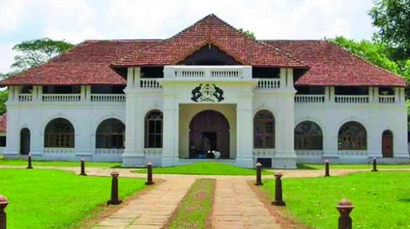

Thrissur enwraps a plenty of attractions including religious places, hills and many natural wonders. Some of the main tourist attractions in Thrissur include Shakthan Thampuran Palace, Archaeological and Art Museum, Vadakkunnathan Temple and Guruvayur Temple. Apart from these, visitors should not miss out on popular sighting places like Chavakkad Beach, Snehatheeram Beach, and Chettuva Backwater, Athirappilly Falls, Vazhachal Falls, and Charpa Falls.
Thrissur is a perfect place for the nature lovers and wildlife buffs as there is a Peechi Wildlife Sanctuary, a home of a more than 25 types of mammals. Among these, tourists mostly look forward to spot tiger, leopard and fox.Apart from these, one can also encounter various herbivorous animals like elks, spotted deer, elephants, barking deer, bison in the sanctuary. For bird watchers, Peechi Vazhani Wildlife Sanctuary in Thrissur has lot to offer.
The park is a home of more than 60 different species of birds, including resident birds and migratory birds as well. It's not only a paradise for birds, but also a home of more than 50 different orchids and innumerable rare medicinal plants. For shopaholics, there are many shops located at the bottom of the temple hill, selling local handicrafts. Thrissur is also famous for producing beautiful silks and great Kerala craft pieces at reasonable prices.
On the outskirts of the city at a distance of some 60 km, the Athirappilly waterfalls mark one of the best places to visit in Thrissur. Standing 80 ft tall and about 330 ft wide, these falls are the largest in the state of Kerala.
The temple premises houses a Pala tree which is pierced with thousands of nails, the reason being patrons who are cured of mental maladies drive a nail across the tree. Men are required to open their shirts before they enter the premises, while women are requested to be dressed in Indian attire to offer reverence.
An ancient temple of Kerala, the Vadakkunnathan Temple is also the oldest temple of the state dedicated to Lord Shiva. Following the architectural style of Kerala, the temple has monumental towers surrounding it.Talking about the inside of the temple, there are several mural paintings that depict various episodes from the Hindu Epic, Mahabharata.
Thekkinkadu Maidan, which surrounds the temple from all sides is where the local festival of Thrissur Pooram is organized every year, granting this place an even more of spiritual importance.
The Palace of Shakthan Thampuran located in the district of Thrissur is a landmark in the annals of the Perumpadappu Swaroopam, the former ruling dynasty of Kochi. The palace located in the heart of Thrissur town is a major attraction, especially for those with a special interest on eminent rulers and dynasties. It is believed that the reign of King Rama Varma Shakthan Thampuran (CE 1790-1805) popularly known as Shakthan as the golden era of Kochi.
The Shakthan Palace also houses an elaborate museum. The museum contains some interesting galleries like the Bronze Gallery, Sculpture Gallery and the Epigraphy Gallery showcasing the genesis and evolution of ancient writings.The final resting place of Shakthan Thampuran is also located inside the palace, besides that of a Zamorin and a ruler of Kochi.

The Dolours Basilica, or the Basilica of Our Lady of Dolours (as the full name goes), is a distinct building in the city of Thrissur. You can easily recognize this grand church from its white facade.
Smack in the middle of a lush green valley, this basilica is known for narrating quite a number of stories of love and faith. Spread in an area of about 25,000 sq feet, Dolours Basilica is the third tallest church in Asia and the largest church in the country with double storeyed aisles.
One of the most fascinating and unexplored beaches of the state of Kerala, the Chavakkad Beach is popularly one amongst the most famous Thrissur Tourist places. Perfect for picnickers, honeymooners, and tourists of all sorts, the golden sand of the beach is what at the tracts people from all corners of the country.
The place where the beach is, there is a river that meets the sea, making an estuary. One of the best reasons for people to flock here is the colour of the waters, and the sight of fishermen going about their daily life. One can do a lot here, one of which is witnessing the amazing cleanliness of the area.